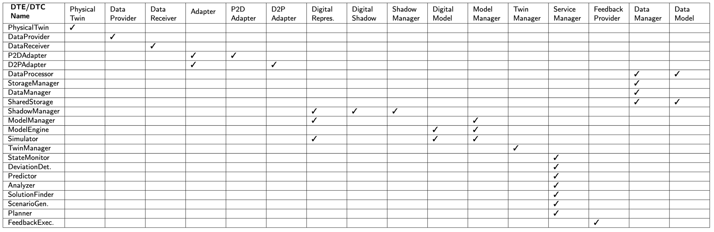

It serves as the bridge between the module and component views of TwinArch.
Artifacts attached in the blue box at the end of the page.

TTV: Matrix Diagram.
Matrix Diagram of TwinArch's traceability view is available in the
twinarch.vpp file, which can be downloaded and opened using the Visual Paradigm modeling tool (version 16.2).